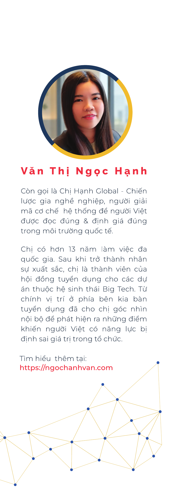
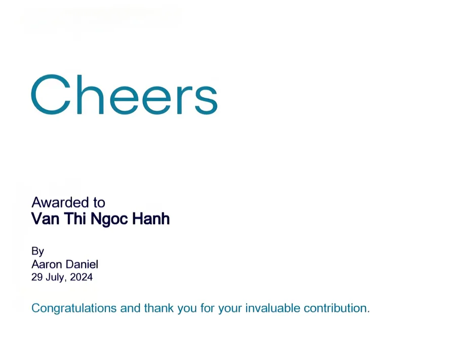
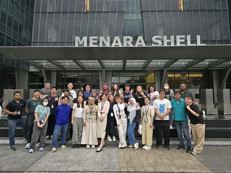

S – System (Hệ thống)
Hệ thống đang đặt bạn ở chiếc ghế nào? Ai đọc hồ sơ của bạn, bằng tiêu chí gì, và quyền quyết định thật sự nằm ở đâu?
Career Strategist · Book Author
Văn Thị Ngọc Hạnh, còn gọi là Chị Hạnh Global, là chiến lược gia nghề nghiệp, người giải mã cơ chế hệ thống để người Việt được đọc đúng và định giá đúng trong môi trường quốc tế.
Chị có hơn 13 năm làm việc trong môi trường đa quốc gia. Sau khi trở thành nhân sự xuất sắc, chị là thành viên của hội đồng tuyển dụng cho các dự án thuộc hệ sinh thái Big Tech. Chính vị trí ở phía bên kia bàn tuyển dụng đã cho chị góc nhìn nội bộ để phát hiện những điểm khiến người Việt có năng lực bị định giá sai trong tổ chức.
Tải tài liệu & STAR READ →
Chị là người sáng lập ra STAR READ SYSTEM để giúp người Việt hiểu cơ chế đằng sau cấu trúc quyền lực và có một quy trình được hệ thống hóa đủ đơn giản để thực hành, để bạn biết cách được đọc đúng, định giá đúng và bảo vệ chính mình trong một tổ chức chưa bao giờ nói thẳng ra luật chơi.
Hệ thống đang đặt bạn ở chiếc ghế nào? Ai đọc hồ sơ của bạn, bằng tiêu chí gì, và quyền quyết định thật sự nằm ở đâu?
Năng lực thật đã được dịch thành thứ tín hiệu mà thị trường hiểu chưa?
Kinh nghiệm không tự biến thành bằng chứng. Bằng chứng cũng không tự biến thành giá trị.
Ai có đủ dữ liệu để tin bạn ở cấp độ tiếp theo?
Làm tốt không tự tạo ra thẩm quyền. Được tin dùng chưa chắc đã đồng nghĩa với được lựa chọn.
Khi thị trường đổi luật, nên giữ gì, học gì, dịch chuyển gì?
Không cần học lại tất cả. Cần biết đâu là lõi, đâu là phần có thể để công cụ làm thay.
Public record · NXB Phụ nữ Việt Nam · Kiến Thức Tài Chính · Amazon KDP
Năm 2020, giữa đại dịch, Hạnh bay một mình qua Singapore để trở lại Kuala Lumpur và bước vào các dự án Big Tech.

Productivity & Quality · 6 năm liên tục
161,6K tương tác · Kiến Thức Tài Chính phát triển thành video.

“Cuốn sách là hồi chuông thức tỉnh giúp chúng ta ngừng dùng nỗ lực chuyên môn thuần túy để giải quyết một bài toán thuộc về cơ chế định giá và luật chơi hệ thống.”
TS. Ngô Thượng TruyếtĐại học Khoa học và Công nghệ Quốc gia Cao Hùng, Đài Loan (NKUST)
Cuốn sách này thực sự hữu ích, góc nhìn thực tế, chúc cho nó đến với nhiều bạn đọc. Tôi tìm thấy sự đồng cảm sâu sắc ở những phân đoạn tác giả bóc tách sự độc lập giữa hệ thống đánh giá hiệu suất và hệ thống đãi ngộ của doanh nghiệp. Hai bánh răng này tưởng như khăng khít nhưng vốn không tự động nối liền.
Việc nhân sự giỏi im lặng làm việc, nhận thêm trách nhiệm nhưng thu nhập và vị thế vẫn đứng yên là thực tế diễn ra ở bất kỳ công sở nào. Cuốn sách này là hồi chuông thức tỉnh giúp chúng ta ngừng dùng nỗ lực chuyên môn thuần túy để giải quyết một bài toán thuộc về cơ chế định giá và luật chơi hệ thống. Nó dành cho những người đi làm muốn thấu hiểu thực tế vận hành của hệ thống định giá và chế độ đãi ngộ để bảo vệ năng lực cũng như giành lại mức thu nhập xứng đáng của bản thân. Đồng thời cũng dành cho những nhà quản lý và chuyên gia nhân sự muốn nhìn rõ giá trị thực của những cống hiến thầm lặng nhằm giữ chân những người giỏi nhất trước khi họ âm thầm rời đi.
Và trên hết, cuốn sách này cũng không cố biến bạn thành một con người khác để thành công, mà đồng hành cùng bạn vẽ thêm phần đường còn thiếu cho tấm bản đồ chăm chỉ, ngoan ngoãn vốn đã dừng lại ở bìa rừng công sở. Nó không ru ngủ độc giả bằng những câu chuyện dễ chịu, mà trang bị dữ liệu thực tế để người giỏi tự định vị lại chiếc ghế và mức giá xứng đáng cho chính mình.
“I want to thank you so much for your help. You are a good teacher and I have learned a lot from a professional.”
“Có những điều mình biết nhưng chưa dám tin. Hạnh giúp mình sáng ra, kiểm chứng lại điều đúng và có thêm niềm tin để hành động.”
“Do chị nhìn được thực tế em đang bị gì nên chị mới có giải pháp phù hợp với em được.”

